逛吧看到一个有关抽签的帖子，楼主说这个情节多次出现。
m26眼镜也获得护身符盖章，而名柯里护身符也多次出现在了数对情侣之间。
基于以上，我马上想到了一个曾多次出现在场景里的意象——樱花。
因为我也是看得断断续续的，可能统计不到位，但以下三个场景明确提到了樱花，还给到了相当大的分镜格子。
1.与服部平次共度的三天，第一天白天
樱花班全篇更是现实叙述部分几乎每个格子都有樱花，4话的扉页大图也是樱花飘过。
所以这个意象也必定有额外的含义暗示。
而每一个樱花镜头之后，把视线切到主角身上，发生了什么呢？
1.共度的三天，柯南请服部查水无怜奈
然后是个人的想法分析。
先从12出发，柯南所说所有内容，确有其事，确有其人，但都是假身份，并不是真相的原貌。水无怜奈不叫水无怜奈，她的真名叫本堂瑛海。伤疤赤井不是赤井秀一，是波本和贝姐轮流假扮的。
个人是很推崇镜头语言艺术的，那樱花在以上这些场景都出现了，是不是可以推断，樱花出现的场景里，所说的事情确有其事，但不是事件的原貌，而有隐藏剧情？
那由此推断，樱花班回忆，是否又是在新兰4岁初遇之下，有着另一个真相？
新兰初遇是真的，心动是真的，但撕开表层的身份，真正心动的又是谁？
如果这是真的，那可以变相锤新志初遇论。
如果不是，那就当暴论和乐子看吧
m26眼镜也获得护身符盖章，而名柯里护身符也多次出现在了数对情侣之间。
基于以上，我马上想到了一个曾多次出现在场景里的意象——樱花。
因为我也是看得断断续续的，可能统计不到位，但以下三个场景明确提到了樱花，还给到了相当大的分镜格子。
1.与服部平次共度的三天，第一天白天
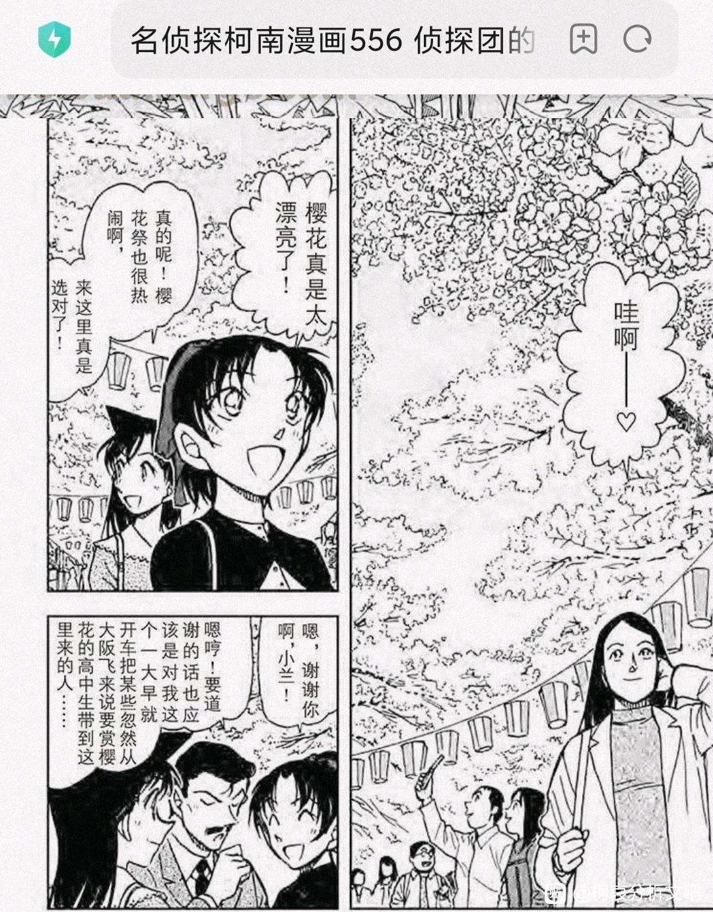
2.朱蒂的樱花回忆
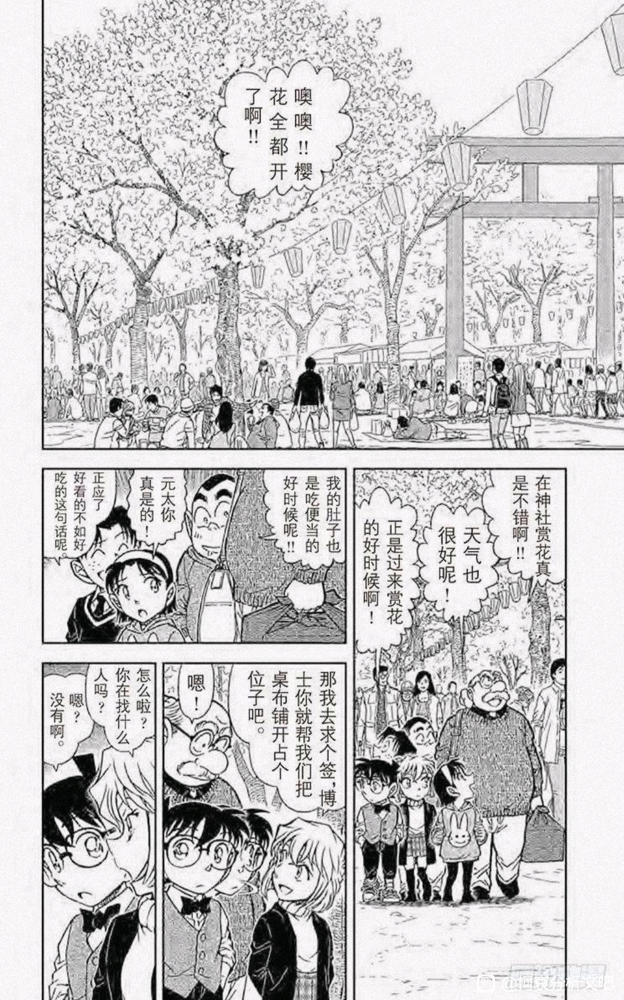
3.樱花班回忆
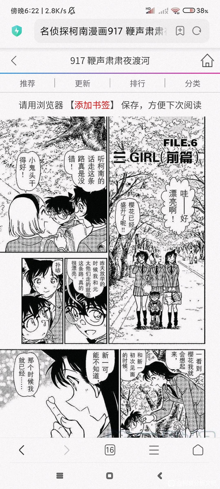
如果只是作背景板，完全不需要给那么大的镜头占比。樱花班全篇更是现实叙述部分几乎每个格子都有樱花，4话的扉页大图也是樱花飘过。
所以这个意象也必定有额外的含义暗示。
而每一个樱花镜头之后，把视线切到主角身上，发生了什么呢？
1.共度的三天，柯南请服部查水无怜奈
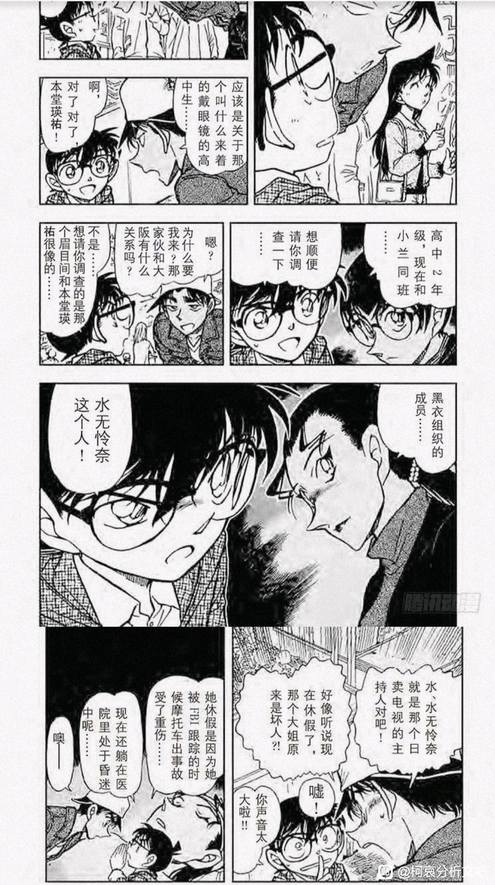
2.柯南解答朱蒂伤疤赤井的问题
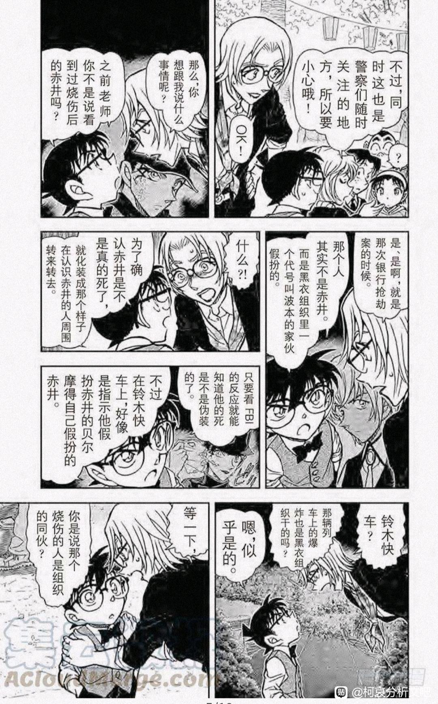
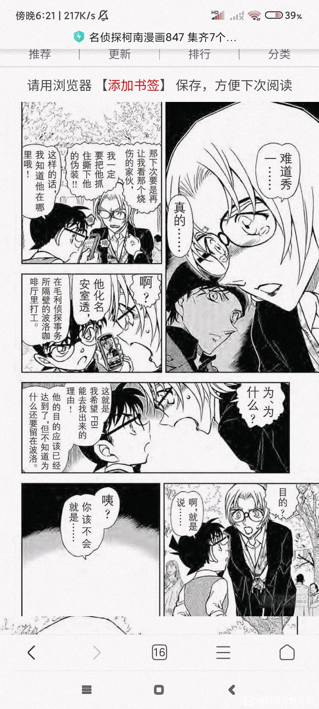
3.（形容不来，劳烦各位看图吧）
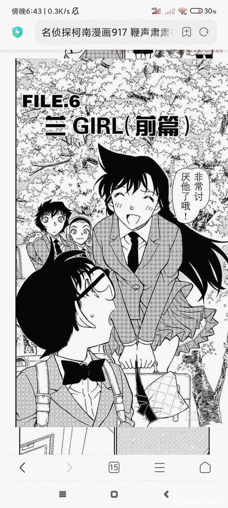
（这是前篇第一次把镜头给到柯南↑）
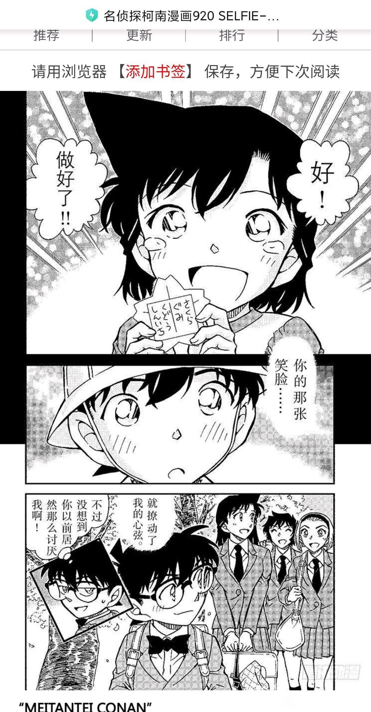
（结尾樱花转回忆再转樱花↑）然后是个人的想法分析。
先从12出发，柯南所说所有内容，确有其事，确有其人，但都是假身份，并不是真相的原貌。水无怜奈不叫水无怜奈，她的真名叫本堂瑛海。伤疤赤井不是赤井秀一，是波本和贝姐轮流假扮的。
个人是很推崇镜头语言艺术的，那樱花在以上这些场景都出现了，是不是可以推断，樱花出现的场景里，所说的事情确有其事，但不是事件的原貌，而有隐藏剧情？
那由此推断，樱花班回忆，是否又是在新兰4岁初遇之下，有着另一个真相？
新兰初遇是真的，心动是真的，但撕开表层的身份，真正心动的又是谁？
如果这是真的，那可以变相锤新志初遇论。
如果不是，那就当暴论和乐子看吧
樱花代表错位是早就有的观点（白林），但这个平次和朱蒂的这个还真是藏得够深啊。
樱花已经被分析为初次的反面教材了，白鸟小林的樱花环就是认错人，还有清水寺的樱花红叶区域转换，还有其他案例我忘了。
2023-10-19 08:59 | 江风一孤同:笑死了，樱花情侣必爆雷2023-12-04 03:59 | 贴吧用户_GMSD67V:回复 江风一孤同 :时候新一的是雪花 在樱花班篇回忆开头是下雪的，到樱花季代表升学了，国内上下期的学期分类。下雪的时间一般是日本第二学期末—寒假—第三学期的事情。樱花季的4月份这样，属于日本第一学期的事情（升学开始第一学期），另外毛利兰是升入樱花班的
可能暗指让新一一见钟情的笑脸并不存在吧。毕竟从girl篇的视角看也是不应该出现的
2023-10-19 08:58 | 江风一孤同:也是一个可能🤔
喔！櫻花藏的這麼深？我也覺得櫻花篇有伏筆，什麼都沒經歷就只看了一次笑臉就愛上了？太好笑了吧！
2023-10-19 08:57 | 江风一孤同:说难听点，4岁小鬼就看了一眼还爱上？算个麻花儿的爱情2023-10-19 09:07 | 江风一孤同:回复 世界上没有真理 :吧里有一个纽约篇延伸出来的论点，当出现新兰回忆同一件事的时候，应该以新一的记忆为准。那根据新一的记忆，他前面都在忙着推理老师拐小孩和嘚瑟，只有最后说因为笑脸心动，光从叙事上就非常突兀，所以这里要说爱上毛利兰是真挺好笑的

先不用说樱花所代表的意向，最让我觉得新志初遇存在的可能性特别大的是小新一说的那句把她抓走当手下，这句话实在太跳跃了，正常情况下是不可能产生这种脑回路，小新一应该是很聪明的，但说一个成年人抓一个4岁小孩当手下实在难以理解，4岁小孩能帮一个成年人做什么呢，有什么成年人做不到的事，一个4岁小孩却能做到。除非转到樱花班前有什么事刺激到了小新一，让他得以产生这种想法
2023-10-20 00:10 | 贴吧用户_GZEURZE:为什么不是“抓去绑架”“偷偷杀死”而偏偏是“抓去当收下”呢


合理的镜头推理，期待验证
个人觉得有点合理，有点。
樱花在漫画中的意象最常见的就是日本公安，引申出追求正义，追求真相都可以。（如果先说樱花的意象，在举例证明的话会好很多）
樱花班的回忆，樱花两个字就暗示了除了表面上的新兰事件，该篇还有隐藏的真相。
新志初遇论已经有不少人分析了，樱花班加上时间胶囊的线索，只能说有机会。
我是乐观向的，毕竟我从灰原哀出场的那一集动画的第一眼，我就觉得柯南灰原，新一志保有戏。
1.樱花班从有希子和英理的台词中就能够推断出新一之前上的幼儿园和兰不是一家的，并且是新学年（小班升中班）的时候新一从原来的幼儿园转到了小兰的幼儿园，两家人来往并不密切。
2.从新一和优作的台词能够推断出，这次事件不是他第一次遇到的事件，在之前幼儿园就发生过一次并且大概率是他转学的理由。并且这事情有希子大概率不知情，新一只和优作提过，所以优作才会支持新一。甚至优作还对新一说如果再有类似的事件可以来和爸爸商量看看。
3.从时间胶囊推断出，志保小时候也在米花上幼儿园。
融合123，得出一个非常劲爆的结论：新志的初遇比新兰更早，新一和组织的缘分来的更早，新一妄图保护好志保但失败了，严重打击转学。（你知道一个大逼斗会对一个小孩子造成多么大的创伤吗？）
融合重制版的第一集：志保从小就没有忘记过工藤新一，并且在生活中也对推理有了些许兴趣，就像华生受到福尔摩斯的影响一样。（青山会毫无理由地重制第一集，你信吗？）
新志初遇还是很有机会的，如果青山真的是如此打算，那么我们一定会看得见的。
ps : 我的爆论是新志初遇，志保对新一露出了笑容，但是因为新一保护失败，他自己没有觉得成功，没有喜悦兴奋的感觉。新兰初遇，兰对新一露出了笑容，是因为新一成功保护了兰，他自己觉得自己成功了，所以很激动兴奋，但是错把这个当成了对兰的心动。
pps : 过去的我没有能够成功保护你，那么现在的我就算死也会保护你的。
樱花在漫画中的意象最常见的就是日本公安，引申出追求正义，追求真相都可以。（如果先说樱花的意象，在举例证明的话会好很多）
樱花班的回忆，樱花两个字就暗示了除了表面上的新兰事件，该篇还有隐藏的真相。
新志初遇论已经有不少人分析了，樱花班加上时间胶囊的线索，只能说有机会。
我是乐观向的，毕竟我从灰原哀出场的那一集动画的第一眼，我就觉得柯南灰原，新一志保有戏。
1.樱花班从有希子和英理的台词中就能够推断出新一之前上的幼儿园和兰不是一家的，并且是新学年（小班升中班）的时候新一从原来的幼儿园转到了小兰的幼儿园，两家人来往并不密切。
2.从新一和优作的台词能够推断出，这次事件不是他第一次遇到的事件，在之前幼儿园就发生过一次并且大概率是他转学的理由。并且这事情有希子大概率不知情，新一只和优作提过，所以优作才会支持新一。甚至优作还对新一说如果再有类似的事件可以来和爸爸商量看看。
3.从时间胶囊推断出，志保小时候也在米花上幼儿园。
融合123，得出一个非常劲爆的结论：新志的初遇比新兰更早，新一和组织的缘分来的更早，新一妄图保护好志保但失败了，严重打击转学。（你知道一个大逼斗会对一个小孩子造成多么大的创伤吗？）
融合重制版的第一集：志保从小就没有忘记过工藤新一，并且在生活中也对推理有了些许兴趣，就像华生受到福尔摩斯的影响一样。（青山会毫无理由地重制第一集，你信吗？）
新志初遇还是很有机会的，如果青山真的是如此打算，那么我们一定会看得见的。
ps : 我的爆论是新志初遇，志保对新一露出了笑容，但是因为新一保护失败，他自己没有觉得成功，没有喜悦兴奋的感觉。新兰初遇，兰对新一露出了笑容，是因为新一成功保护了兰，他自己觉得自己成功了，所以很激动兴奋，但是错把这个当成了对兰的心动。
pps : 过去的我没有能够成功保护你，那么现在的我就算死也会保护你的。
2023-10-19 22:28 | 一颗鱼丸不要面:过去的我没有能够成功保护你，那么现在的我就算死也会保护你的2023-10-20 02:33 | 贴吧用户_5e3XaDN:如果是优作知情的话，樱花班开头那一段会不会是优作和若狭在对话，接着就是优作开签售会放烟雾弹，实际上是优作把自己的经历写进书里了？2023-10-20 04:03 | 库洛撒KITH:回复 贴吧用户_5e3XaDN : 没想那么细呢。2023-10-30 03:02 | 红茶中的白兰地:还有一个可能，漫画里提了几次灰原戴帽子会被误认为小男孩，而博士初恋提到混血儿为了让自己的发色不显眼，会戴帽子。所以新一所认识的是一个“不知道名字的，戴着帽子的小男孩”2023-10-30 03:04 | 红茶中的白兰地:回复 红茶中的白兰地 :因为以为是男孩，所以并没有转化成初恋。而这个笑容是如此的美好，新一虽然忘记了“小男孩”却把笑容记住了，所以他需要给这个笑容找一个载体，于是就安在了毛利兰的身上2023-10-30 03:51 | 库洛撒KITH:回复 红茶中的白兰地 :柯南那个鱼的记忆，说不定真记不起来了。参考和赤井一家的沙滩事件，不是什么线索的话，想不起来。2023-12-04 04:22 | 贴吧用户_GMSD67V:回复 库洛撒KITH :工藤家应该是在新宿区的，小五郎未调至本厅前在的米花警察署原型应该是新宿警察署，帝丹体系应该是现实里的早稻田体系（主体）。所以名柯里面应该存在帝丹幼儿园。
有点意思另外值得注意的是123的案件都有同样的套路，身份错位
共度三天里，第一案是住持假扮死者混淆视听，第二案薰衣草别墅事件是女仆被冤枉+越水七槻假扮高中生
朱蒂的樱花回忆，绑架案受害者夫妻是波贝一同假扮
樱花班回忆，江舟夫妻试图拐孩子来替代离家出走的女儿
结合白林樱花环错位，和本帖樱花场景象征樱花树下谈论的事件确有其人其事但身份有错的推测，新志初遇论好像更可信了
共度三天里，第一案是住持假扮死者混淆视听，第二案薰衣草别墅事件是女仆被冤枉+越水七槻假扮高中生
朱蒂的樱花回忆，绑架案受害者夫妻是波贝一同假扮
樱花班回忆，江舟夫妻试图拐孩子来替代离家出走的女儿
结合白林樱花环错位，和本帖樱花场景象征樱花树下谈论的事件确有其人其事但身份有错的推测，新志初遇论好像更可信了
2023-10-20 03:58 | 世界上没有真理:那櫻花篇是誰假扮了誰?2023-10-20 05:02 | 江风一孤同:回复 世界上没有真理 :这个时候自然要请出我们的新志初遇论啦

手机输入法抽风了，想复制的东西复制不了。
码一点自己的看法做补充。
码一点自己的看法做补充。
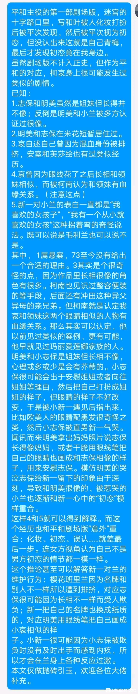
2023-11-22 05:24 | 瑞语心飞:强2023-12-02 09:27 | 雪雪诺诺23:因为青山说过，他的初恋是茶色头发的女孩，名柯里面好多因为混血（发色）的身份被霸凌过，我猜青山的初恋就是混血儿，很有可能并因此被同学霸凌。 ps.好像在日本因为混血被霸凌的特别多2023-12-09 04:26 | 凌蘭诗:回复 雪雪诺诺23 :这个可以找到出处吗？
补充一个我另外发现的东西吧。我不确定是阅读端的适配问题还是原本就是这样，兰girl和新一boy两段的后篇封面，大人形态的毛利兰的脸是被标题遮住了的，新一则完全没有。
而且幼年毛利兰的角完全不见了，正文里毛利兰的角则是戴了帽子都很明显，这个在吧里别的帖子也有人提到。
不知道这算不算另一种错位呢？或者这算不算错位的另一个证据呢？
而且幼年毛利兰的角完全不见了，正文里毛利兰的角则是戴了帽子都很明显，这个在吧里别的帖子也有人提到。
不知道这算不算另一种错位呢？或者这算不算错位的另一个证据呢？
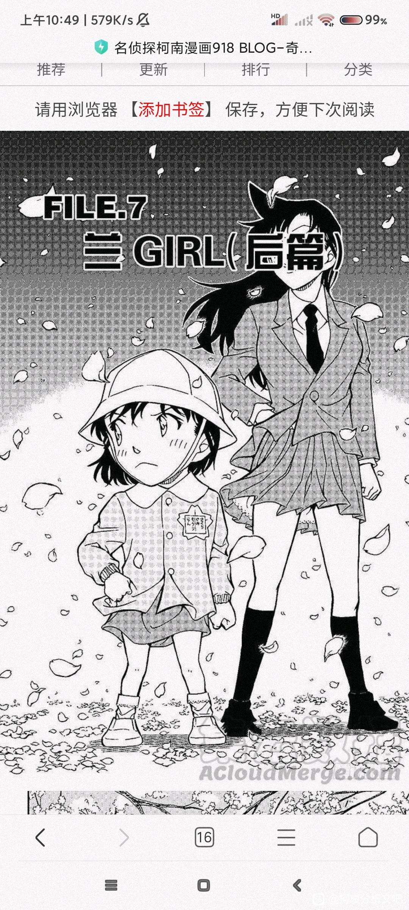
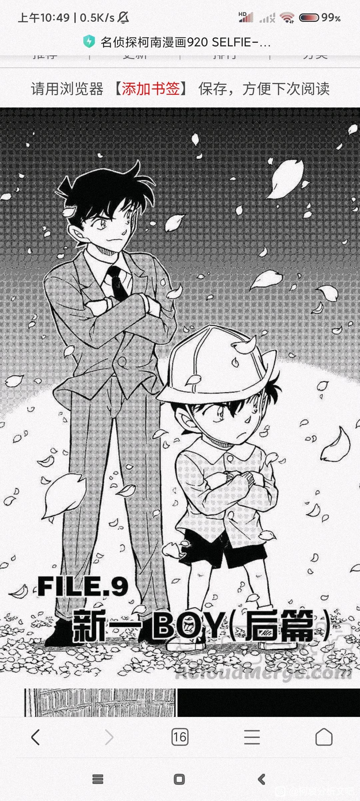
2023-10-25 23:00 | 江风一孤同:封面和扉页大图一般是不会让文字挡住主要人物的脸的，但毛利兰这张则是反其道行之，如果原本就是这样，那只能说这一篇确实有其他的剧情，女主角就不是毛利兰了，哪有主角脸被挡住的2023-10-25 23:18 | 江风一孤同:至少以本人浅薄的看漫和绘画经历是没见过标题会把人物的脸挡住的情况。挡住的话要么这个人物完全不重要，就是背景板，要么就是用来凸显旁边的人和物的，而大人形态毛利兰旁边是谁呢？幼年体的？？？（因为没有正文里的角，我初步认为这不是毛利兰，就改打问号了）2023-10-30 01:11 | 世界上没有真理:回复 江风一孤同 :這邊有點奇怪，我看的922話字沒擋住臉，，不知道是不是編輯問題之後有做修正?2023-10-30 02:04 | 江风一孤同:回复 世界上没有真理 :后面和其他人讨论过之后我搞到了日语电子版漫画，确实没有挡住脸，只能说嵌字背大锅。但扉页小毛利兰那个角没了确实很奇怪，正文戴帽子都挡不住，还是怀疑有错位2023-10-30 02:12 | 江风一孤同:回复 世界上没有真理 :另外樱花班开篇对话也很奇怪，说话的女人单从外形上说很像若狭，还特意给了一格看她手贴玻璃。动漫直接改成江舟老婆，要说和后面江舟女儿的剧情连上也说得过去。但仅仅一个npc其实并不需要专门给特写，可是樱花班篇塞个若狭进来也很突兀，现在没有任何后续的情况下很难圆2023-10-30 02:16 | 世界上没有真理:回复 江风一孤同 :錯位是一定有，裡面要素過多櫻花雪花論還有跳舞的小人 綁架做手下 聖誕節星星 轉學等，再結合小哀最近一直狂戴帽子就知道肯定有伏筆，說也奇怪當初看櫻花篇的時候沒感覺有啥，直到m26後才發現青山埋了一大堆暗示2023-10-30 02:19 | 世界上没有真理:回复 江风一孤同 :我猜若狹可能跟宮野姊妹小時候有關，有沒有可能宮野姊妹還沒被組織找到前，可能就是若狹照顧的？櫻花篇開篇也是很典型的敘詭，窗邊女人、冬天春天、雪花櫻花，不仔細看，會以為都是同一個場景2023-10-30 02:25 | 江风一孤同:回复 世界上没有真理 :确实，当初看樱花篇只觉得就是个男孩女孩相遇的故事（当然毛利兰重点跑偏和一直哭也有点降低观感，最后还来个4岁一见钟情就地铁老人手机了）看完若狭再看樱花篇漫画就感觉有点毛骨悚然了（开篇很像若狭的女人和全篇诡叙）2023-10-30 02:26 | 江风一孤同:回复 世界上没有真理 :有可能喔，说不定小哀也认出了若狭，甚至两人已经背着柯子私下交流过了，不然小哀怎么上来就发金水和若狭动不动眼睛就黏小哀身上2023-10-30 02:32 | 世界上没有真理:回复 江风一孤同 :要是之後櫻花篇伏筆揭開路人大眾肯定會很吃驚，櫻花篇敘詭讓我覺得老賊不愧是推理漫畫家，以前看就覺得是小屁孩一見鍾情的老套戲碼，現在看跟你一樣毛骨悚然，只能說藏太深了，連讀者都搞錯，這不是錯位論都說不過去2023-10-30 02:35 | 江风一孤同:回复 世界上没有真理 :所以我很认同那个观点，所谓恋爱推理漫画，感情线也是推理play的一部分2023-10-30 02:38 | 世界上没有真理:回复 江风一孤同 :只有新蘭看不懂，她們只看得懂臉紅吃醋還有男女朋友的名分，至於分析文她們很不屑，因為官配是不需要分析的2023-10-30 02:43 | 江风一孤同:回复 世界上没有真理 :只能说她们只喜欢霸道总裁爱上我和当娇妻2023-10-30 02:48 | 世界上没有真理:回复 江风一孤同 :說得對啊！每次看到新蘭發言都會覺得我們真的是不在一個頻道上，怎麼人與人的差距是如此之大？不過想想之前的新蘭劇場版還有oped新蘭樣板戲都把新蘭永恆新蘭官配的形象深植人心也就不奇怪了，我都能想到要是柯哀結局她們肯定會罵青山恰爛錢2023-10-30 02:53 | 江风一孤同:回复 世界上没有真理 :我感觉还不止2023-10-30 02:56 | 江风一孤同:回复 世界上没有真理 :不过她们连山崎和佳奈都骂，理由是没给毛利兰争取更多戏份，这么一搞对面多离谱的事好像都见怪不怪了2023-10-30 03:02 | 世界上没有真理:回复 江风一孤同 :她們根本不愛毛利蘭這個角色，只是這個角色方便她們代入而已，有時我會想要不是有哀這個人氣高的“女配”存在，蘭粉會有這麼多？2023-10-30 03:02 | 世界上没有真理:想想自己只是個普通女高，然後有個家世好又帥又有名氣的青梅竹馬，只喜歡我，一個18歲混血女博士人氣高又怎樣？還不是我毛利蘭手下敗將，就不難想像蘭粉這麼多了2023-10-30 03:09 | 江风一孤同:回复 世界上没有真理 :这说得，有钓凯子搞万人迷那味儿了。果然对面多是些没经历过毒打的低龄学生2024-01-17 03:42 | 古瑞姆:隔壁发现这个封面的小兰头上没角，但是该篇所有小兰包括带帽子的都有角。可能是幻视了2024-01-17 03:43 | 古瑞姆:回复 古瑞姆 :开始害怕，新一真正的初恋不会是明美吧。一开始看到明美觉得不一样，还有漫画里经常说柯南喜欢年长大姐姐2024-01-17 22:14 | 江风一孤同:回复 古瑞姆 :新一的初恋，青山有明确说是毛利兰，但毛利兰的初恋他一直含糊其辞。结合现有纽约篇的各种错乱和信息不对等，目前有一个观点认为毛利兰的初恋应该是秀一（如果是，那就回收一半樱花错位和赤新电话亭动作镜像的安排）2024-01-17 22:15 | 江风一孤同:回复 古瑞姆 :对，封面没角更让我坚定有错位，毕竟正片那么大一个角，戴着帽子都盖不住，怎么到封面还没了

歪个题。这张是危命复活篇的其中一张扉页，新一的脸上画了一条不是头发也不像伤疤的痕迹，我第一反应是m13贝尔摩德的面具被划拉了一条。是不是在暗示“新一”已经只是一张伪装的面具了呢？
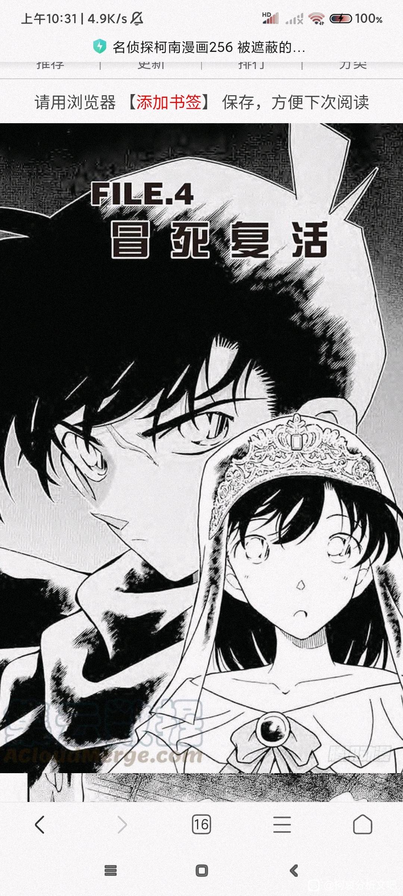
2023-10-30 01:03 | 世界上没有真理:我怎麼想到紐約篇貝新論去了.......2023-10-30 01:59 | 江风一孤同:回复 世界上没有真理 :也不是不能算一个暗示2023-10-30 05:01 | 平者深黑:这个是夏亚的伤疤。黑衣骑士原型是夏亚（头盔很像），舞台剧台词也有提到过这个伤疤2023-12-06 21:47 | 贴吧用户_7QMP69K:这个兰好像明美小时候啊

さくら的似乎本来就带有“假”的含义。如翻译中给的例子：说白了就是托儿。对托儿的发散解释可以有很多种，例如：表里不一（对于水无和伤疤赤井适用）
P.S.迪迦奥特曼第37集 花--码农星人也使用大量樱花背景，那集的怪兽是美女变得。
P.S.迪迦奥特曼第37集 花--码农星人也使用大量樱花背景，那集的怪兽是美女变得。
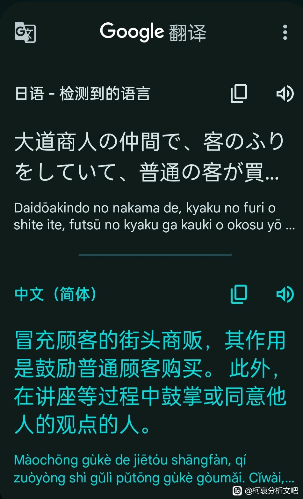
要是整个反转，我在想那个人不会也不是志保而是明美吧。明美和兰像，最容易被幻视的是明美吧。不会是将志保+明美幻视成兰了
那个笑容十有八九是明美的，而且很有可能是明美在志保被带走送别的时候，为了不让妹妹担心而强忍悲痛露出的笑容，因为某些原因被小新一目睹了。
而且麻美学姐篇章里新一初恋的那几条，我感觉完美符合的就是明美。
而且麻美学姐篇章里新一初恋的那几条，我感觉完美符合的就是明美。